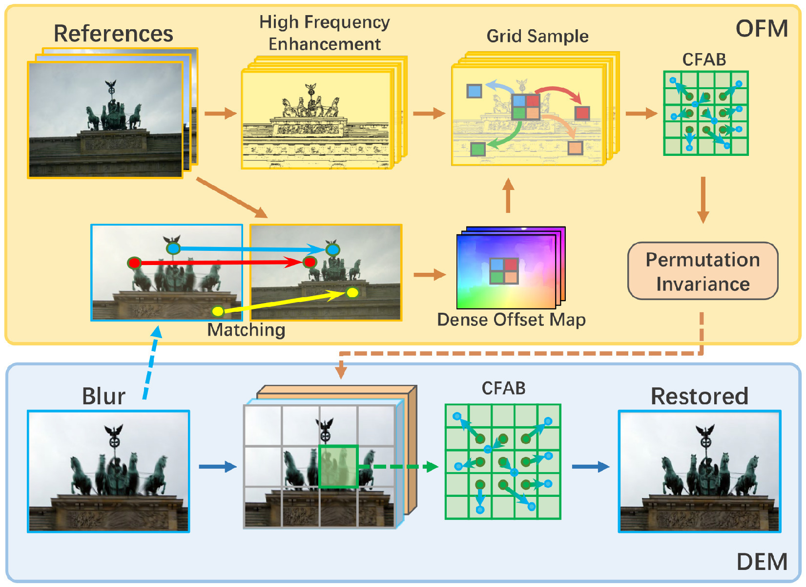

MRFNet · Multi-reference fusion for image deblurring
Multi-reference deblurring with dense matching, offset fusion, and deformable enrichment for an arbitrary number of discontinuous references.
Research software
Selected research projects, interactive explanations, and code.

Multi-reference deblurring with dense matching, offset fusion, and deformable enrichment for an arbitrary number of discontinuous references.

An interactive project page for a 2-point RANSAC solution to the Perspective-n-Point problem, designed for difficult outlier and near-degenerate cases and up to 100× faster than RANSAC-RP4P at high outlier rates.